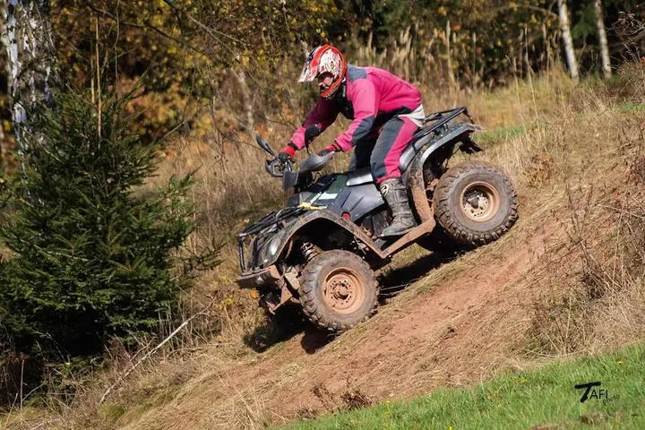
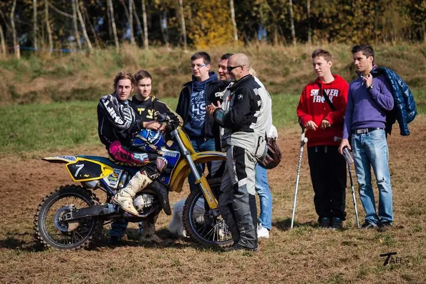
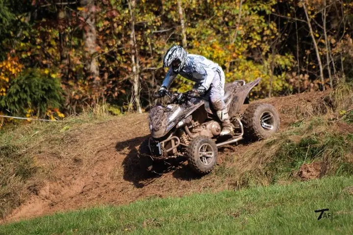
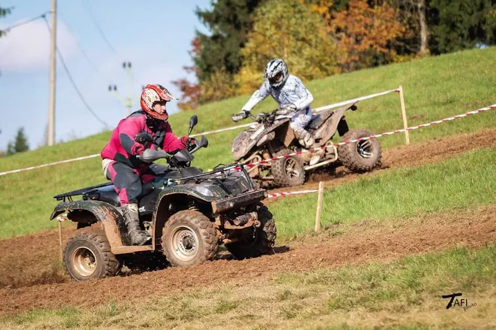
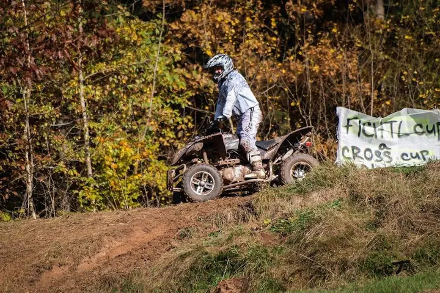
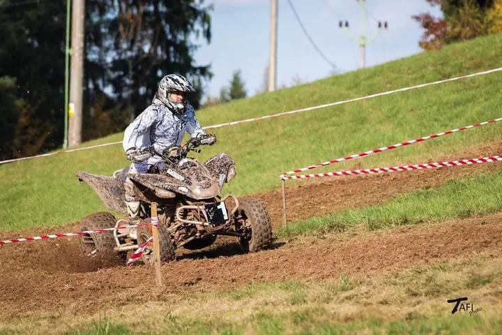
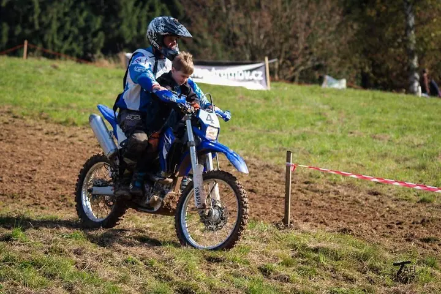
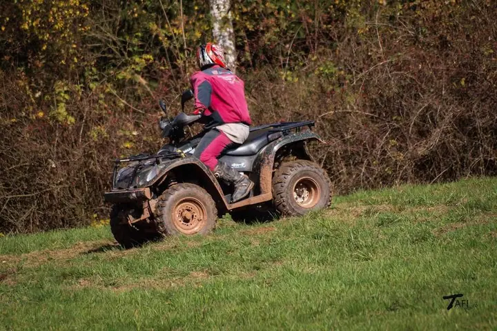
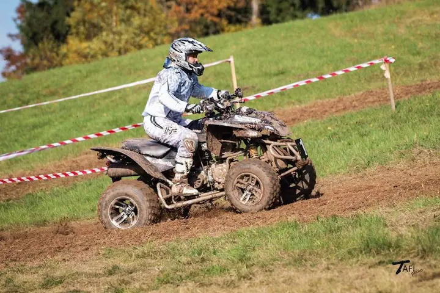

Anna Tafilová
Zvířata i akce v pohybu
Zeptat se na termín →(01) Ahoj
Jmenuji se Anna Tafilová a fotím hlavně zvířata. Nejvíc koně ve volnosti ve výběhu, ale také psy na procházce nebo koncerty a festivaly . Vyjíždím z Bílých Poličan a fotím po celém Královéhradeckém kraji.
(02) Co fotím
Focení, které má příběh
Co nabízím
-
01
Focení koní
Koně fotím hlavně ve volnosti ve výběhu. Portréty nebo práci pod sedlem ale fotím taky.
↗ -
02
Focení psů
Fotíme při procházce nebo u vás doma. Portréty, pohybovky nebo oblíbené fotky na černém pozadí, focení trvá od 15 minut do hodiny.
↗ -
03
Jiná zvířata
Zkušenosti mám i s hospodářskými zvířaty, drobnými hlodavci a kočkami.
↗ -
04
Hudební akce
Fotím koncerty a festivaly.
↗
(04) Postup
Jak to probíhá
Od první zprávy po hotovou galerii.
-
1
Krok 1 z 4
Napište mi
Ozvěte se e-mailem, přes formulář nebo na Facebooku „Fotografka Anna Tafilová“. Určitě se domluvíme.
-
2
Krok 2 z 4
Domluvíme místo
Psy fotíme na procházce nebo u vás doma, koně nejčastěji ve výběhu. Vyjíždím z Bílých Poličan.
-
3
Krok 3 z 4
Focení
Fotíme v klidu a podle toho, jak to zvíře zrovna zvládá. Focení psa trvá od 15 minut do hodiny.
-
4
Krok 4 z 4
Fotky
Z focení vyberu nejlepší snímky, upravím je a pošlu vám je.
Koně ve volnosti, psi v pohybu
(05) Za objektivem
Ahoj, jsem Anna
Fotografování koní bylo vždy mou specialitou. Nejraději je fotím volně ve výběhu, ale portréty nebo práci pod sedlem fotím taky. Psy fotím na procházce nebo u vás doma, od portrétů po pohybovky a fotky na černém pozadí.
Zkušenosti mám i s hospodářskými zvířaty, drobnými hlodavci a kočkami. Kromě zvířat fotím koncerty a festivaly.
Fotím na Canon EOS 700D a pro rychlé záběry z dálky beru teleobjektiv 70–200 mm. Fotím zdarma formou TFP, příspěvek na cestu vždycky potěší.
- 01Koně jsou moje specialita
- 02Vyjíždím z Bílých Poličan
- 03Fotím na Canon EOS 700D
- 04Dřív jsem fotila Olympusem
- 05Fotím formou TFP
Anna
Anna Tafilová · Fotografka koní, psů a zvířat
Kolik focení stojí?
Fotím zdarma, formou TFP. Příspěvek na cestu je vítán.
Kam za vámi můžu přijet, nebo kam přijedete vy?
Fotím v Královéhradeckém kraji a po domluvě i v celých severovýchodních Čechách. Vyjíždím z Bílých Poličan.
Jak dlouho focení trvá?
U psů trvá focení od 15 minut do hodiny, podle povahy a energie vašeho psa.
Fotíte i jiná zvířata než psy a koně?
Ano, zkušenosti mám i s hospodářskými zvířaty, drobnými hlodavci a kočkami. Napište mi, co máte doma, a domluvíme se.
(07) Kontakt
Určitě se domluvíme
Napište pár vět o tom, co si představujete, a termín, který se vám hodí.
ann.tafil@email.cz- Web tafi-photo.weebly.com
- Královéhradecký kraj · severovýchodní Čechy · Bílé Poličany